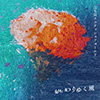

立ち耳スコティッシュフォールド / DIGITAL Sg [終わりゆく風] 2022.2.22 ON SALE!

＜デジタル配信＞
関西を拠点に活動する男女ツインボーカルバンド！
バンド名(猫の種類)にちなんで猫の日(2月22日)に最新デジタルシングル「終わりゆく風」(c/w 猫の自由)を配信リリース決定！ ！
1.「終わりゆく風」(c/w 猫の自由)
Self Liner Notes by まつもとしょうご (vo/gt)
「終わりゆく風」
物事が終わりに向かう時「終わりゆく風」は何処からともなくやって来ます。
この風にさらされている事を自覚するのは難しいです。
ただ「終わりゆく風」が運んできた後悔や寂しさや希望などの感情はしっかりと心の中に残り続けるので、
全てが終わってしまった後この風の吹いていた意味を理解し、この風の存在を知ることが出来ます。そんな曲です。
「猫の自由」
2017年の冬にこの曲を作り、その翌年初めてのレコーディングを行いました。
この曲が収録された1stシングルをきっかけに色んな事があったのを覚えています。
それから5年が経った2022年2月22日(猫の年、猫の日)にこの曲の再録を発表する事が出来てとても嬉しい気持ちです。
これからもっと色んな人に色んなタイミングで聴いてもらえる曲になれば良いなと思います。